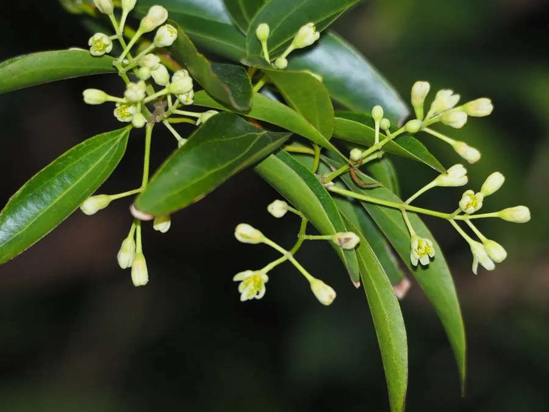

乔木 · 植物界
阴香 Cinnamomum burmannii

樟科樟属常绿乔木，树皮含肉桂香气，可药用和提取芳香油，是华南常见的行道树与风景树种。
- 分类
- 门被子植物门纲木兰纲目樟目科樟科属樟属
- 栖息环境
- 海拔 800 米以下的沟谷、山坡疏林，喜温暖湿润的低山环境
- 地理分布
- 中国广东、广西、福建、海南、云南；越南、印度尼西亚等地
- 保护级别
- 暂无评估；未被列入国家重点保护野生植物名录
物种志
阴香为樟科樟属常绿乔木，高八至十五米，树皮灰褐色、平滑，折断后有浓郁的肉桂香味。叶片互生或近对生，革质，卵形至长圆形，表面深绿有光泽，背面淡绿，具离基三出脉。圆锥花序腋生或近顶生，花小，绿白色，花期三至四月；果实卵球形，成熟时紫黑色，果期七至八月。
阴香分布于广东、广西、福建、海南、云南等地，越南、印度尼西亚等东南亚国家也有，多生于低海拔的沟谷和山坡林中。它喜温暖湿润和充足阳光，不耐严寒，适宜深厚肥沃、排水良好的土壤。树皮入药称阴香，有温中散寒、理气止痛之效；枝叶可提取芳香油，用于香料和医药；树冠浓密常绿，抗污染能力强，常作行道树和厂区绿化树。
形态与习性
- 株高8–15 m，树皮有肉桂香
- 花期3–4 月，花小、绿白色
- 果期7–8 月，果实紫黑色
- 光照喜光，也耐半阴
- 水分喜湿润，不耐长期积水
- 土壤深厚肥沃、排水良好
- 主要用途行道树，树皮药用，枝叶提油
趣味知识
- 阴香的树皮是“广东桂皮”的来源之一，香气清甜，常作肉桂的代用品。
- 它的叶片揉碎后有类似桂皮的辛香，民间曾用鲜叶煮水沐浴。
- 阴香抗二氧化硫和烟尘能力强，是华南工矿区常见的绿化树种。